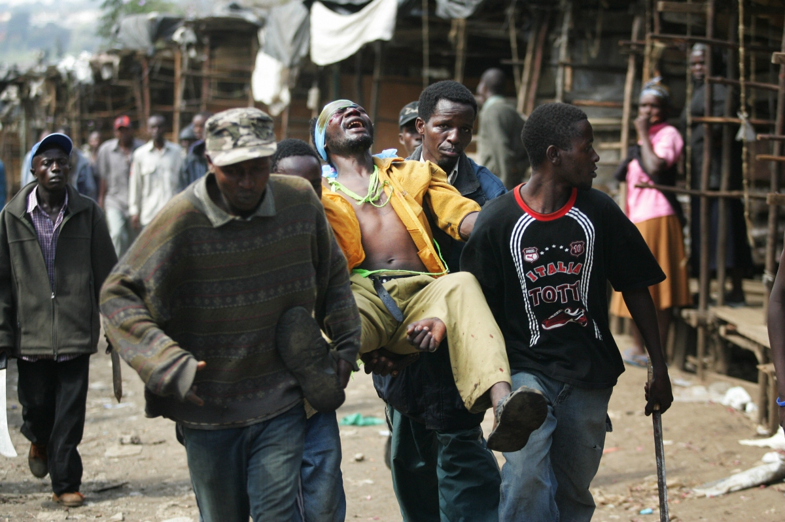
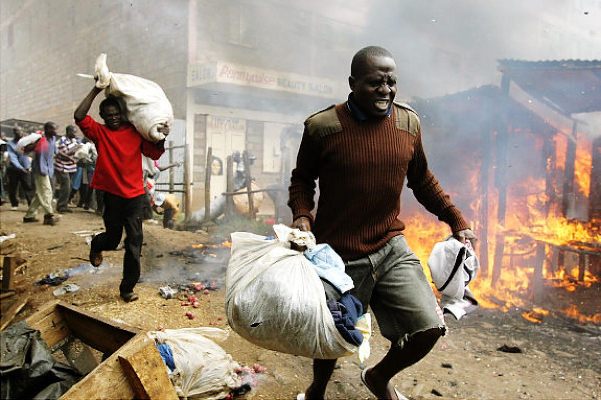
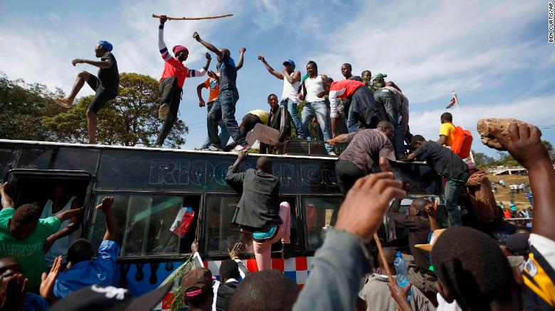
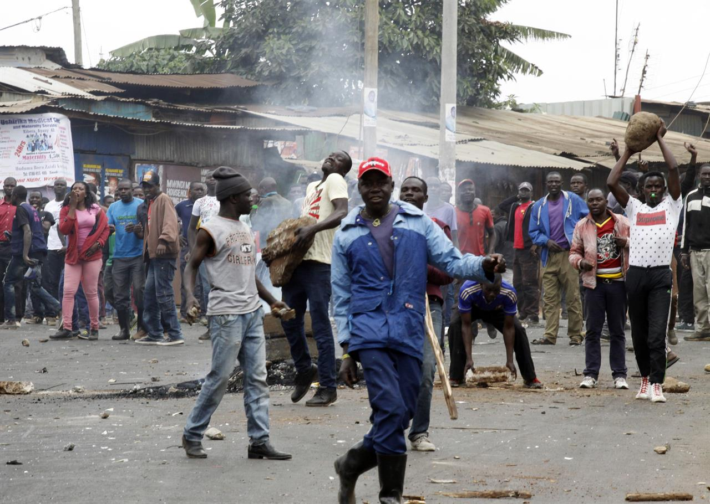

|

There have been several such protests in recent weeks. Protests were also held in other Kenyan towns including Kisumu and Kisii, with police there firing tear gas to break up the crowds, local media reported. Raila Odinga, a former prime minister who lost his latest bid for the presidency in 2013, accuses the commission of being biased towards President Uhuru Kenyatta. He has demanded that a new slate of commissioners be named ahead of the next election in August 2017. |
|

Shocking scenes of violence erupted in Kenya today as police fired tear gas to break up demonstrations urging electoral reforms ahead of the general elections next year. Police were caught on camera beating some protesters who had gathered outside the offices of Kenya's electoral commission in the capital Nairobi. In the horrifying scenes that ensued, officers then chased them through downtown streets and alleyways. Some protesters hid in nearby buildings but riot police flushed them out toward waiting colleagues who then beat them with wooden clubs and kicked them as they tried to flee. |
|

Kenya opposition leader Raila Odinga swears himself in as 'president' Opposition leader Raila Odinga holds a bible aloft after swearing an oath during a mock inauguration ceremony at Uhuru Park in downtown Nairobi, Kenya, on Tuesday. Opposition leader Raila Odinga holds a bible aloft after swearing an oath during a mock inauguration ceremony at Uhuru Park in downtown Nairobi, Kenya, on Tuesday. Nairobi, Kenya (CNN)Kenyan opposition leader Raila Odinga, who boycotted the country's disputed election last year, swore himself in as the "people's president" at a mock inauguration ceremony Tuesday in protest against President Uhuru Kenyatta. Thousands of opposition supporters gathered at Uhuru Park in central Nairobi, chanting slogans and waving tree branches at the symbolic "swearing-in" event, which was organized by Odinga's National Super Alliance (NASA). |
|

The event was largely peaceful, and the throngs of supporters quickly left the park after proceedings had concluded. In what appear to be an isolated incident, police fired tear gas to try to to disperse crowds pulling down signs near the park. Authorities had earlier said they would put a stop to any illegal meetings, but Reuters reported that no uniformed police could be seen in the park and no anti-riot officers or vehicles were visible.Afterward, the biography on Odinga's verified Twitter account had been updated to read: "This is the official account of His Excellency Raila Amolo Odinga, President of the Republic of Kenya." |
|
Odinga supporters gather for his mock "swearing-in" ceremony in Nairobi on Tuesday. Kenyatta won a second presidential term with 98% of the vote following a controversial election rerun in November. The country's Supreme Court nullified the previous ballot, also won by Kenyatta, due to "illegalities and irregularities." Odinga and his opposition party dropped out of the second vote, claiming the election commission had failed to implement any reforms. |
|
Ahead of the event, three of the country's largest television stations were pulled off air by the government -- a move not seen in the country for years. "President Kenyatta expressly threatened to shut down and revoke the licenses of any media that would broadcast the planned purported swearing in of NASA leaders Raila Odinga and Kalonzo Musyoka on Tuesday," Kenya Editors Guild Chairman Linus Kaikai said in a statement on Monday night. Local channels KTN, NTV and Citizen television's free-to-air channels were turned off beginning around 10:00 a.m. (2:00 a.m. ET) Tuesday morning. |
Other government portals